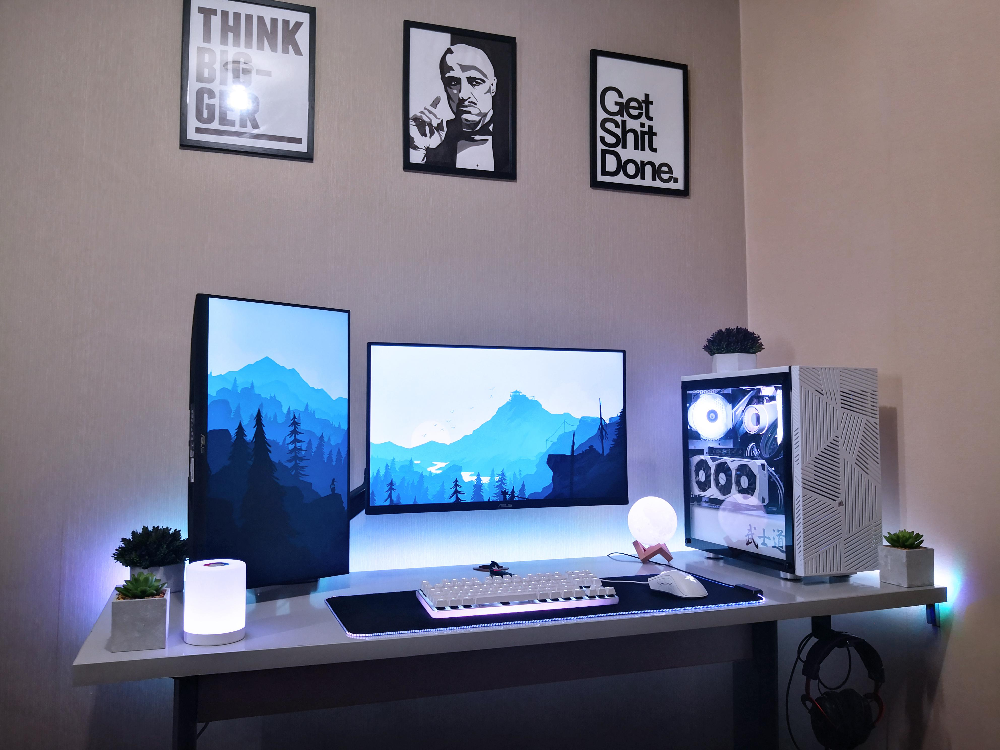

Where to Put Your PC: Placement, Airflow, and Safety
Written by: The PC Parts Guide Team
March 2026 • 6 min read
You spent a lot of money on your PC. Most people just plonk it wherever there's space — but where you put your PC actually has a big impact on temperatures, dust buildup, longevity, and even your safety.
Floor vs. Desk: Which Is Better?
On the Floor
Most people place their tower PC on the floor to save desk space. This is fine — but comes with some important considerations.
Saves desk space
Easier to tuck away and keep tidy
Carpeted floors are bad! Carpet traps dust and can block bottom intake fans
More dust gets sucked in at floor level
Harder to access front USB ports and power button
Higher risk of accidentally being kicked
CARPET WARNING: Never place your PC directly on carpet. Carpet fibers get sucked into fans and clog your PC. Use a hard surface, a piece of wood, or a dedicated PC stand to elevate it.
On the Desk
Less dust (dust settles more on the floor)
Better airflow — more open space around the case
Easier to access ports, USB, and the power button
You can admire your build!
Takes up desk space
Easier to accidentally knock over

A well-placed PC with good clearance on all sides.
The Golden Rules of PC Placement
Rule 1: Give It Room to Breathe
Your PC pulls in cool air and pushes out hot air. If it's crammed into a tight cabinet or corner with walls all around it, the hot air it pushes out will just get sucked back in — cooking your components.
Leave at least 15–20cm of space on the front (intake) and back (exhaust) of your PC. The sides don't matter as much unless your case has side vents.
Rule 2: Never Inside a Closed Cabinet
This is the #1 mistake beginners make. Placing your PC inside a closed wooden cabinet or entertainment center traps hot air with no escape. Temperatures can spike by 20–30°C, causing severe thermal throttling or permanent damage over time.
NEVER DO THIS: Putting your PC inside a closed cabinet with no ventilation. If you have to use a cabinet, make sure the doors are open while the PC is running, or drill ventilation holes in the back.
Rule 3: Keep It Away from Heat Sources
Don't place your PC:
Next to or directly under a window with sunlight hitting it
Next to an air conditioning unit exhaust
Near cooking areas or stoves
In a room with no airflow (closed room in Philippine summer = oven)
Rule 4: Protect It from Liquids
Water and electronics don't mix. Keep drinks away from your PC — one spilled glass can destroy everything. If you must have drinks at your desk, keep them on the opposite side from your PC.
Rule 5: Stable Surface
Your PC should sit on a stable, flat surface. An unstable surface risks vibrations that can loosen connectors over time, and a fall can destroy your GPU, crack the motherboard, or scratch up your hard drive.
Specific Situations in Humid Countries
No Air Conditioning?
Countries around the equator can get extremely hot and humid. If your room doesn't have air conditioning, your PC temperatures will be noticeably higher. Here's what helps:
Use a mesh front case for good airflow
Make sure the room has good ventilation (open window with a fan)
Add an extra case fan or two
Consider an AIO cooler over air cooling
Keep your PC elevated off the floor to reduce dust
PH TIP: At 35°C ambient room temperature, your CPU might idle at 50–60°C. This is normal. Just make sure it doesn't go above 90–95°C under gaming load. Use HWMonitor (free software) to check your temperatures.
Brownouts and Voltage Fluctuations
Power fluctuations are common in many parts of the Philippines and can damage your PC components — especially your PSU and storage drives. Always use a UPS (Uninterruptible Power Supply) or at minimum a good AVR (Automatic Voltage Regulator).
IMPORTANT: A sudden power cutoff while your PC is writing to the SSD can corrupt Windows or your files. A UPS protects against this by providing battery backup during brief brownouts so you can safely shut down.
Dust Management
Dust is the silent killer of PCs — it builds up on your fans and heatsink fins, acting as insulation that traps heat. Make a habit of cleaning your PC regularly.
Every 3–6 months: Open the side panel and clean dust filters with a soft brush
Every 6–12 months: Blow out the inside with compressed air (can of air or air compressor)
Every 2–3 years: Reapply thermal paste on the CPU
QUICK SUMMARY:
• Never put your PC on carpet — use a hard surface or stand
• Leave 15–20cm of space at the front and back for airflow
• Never inside a closed cabinet while running
• Keep away from sunlight, heat sources, and liquids
• In the Philippines: mesh case + extra fans + consider a UPS
• Clean your PC every 3–6 months to prevent dust buildup